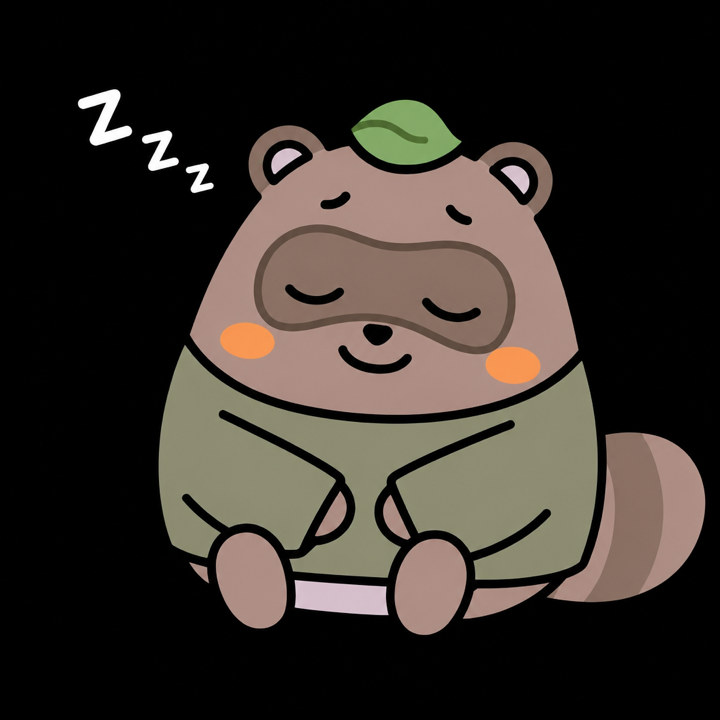
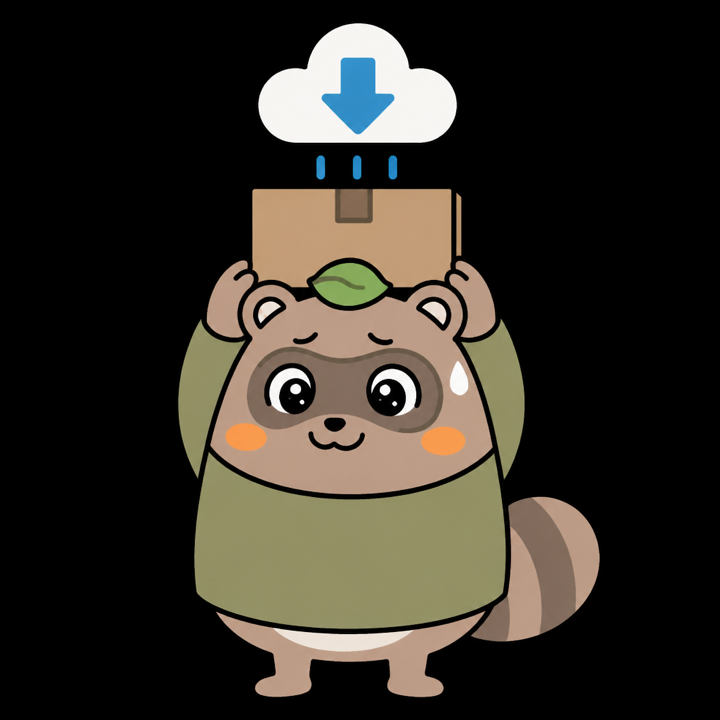
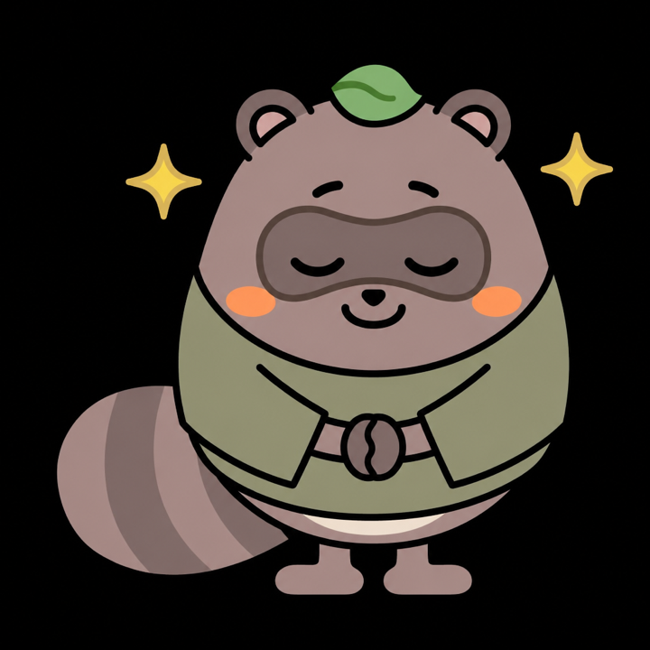

Progress Report
AI秘書「ホッシーくん」 開発進捗レポート
出先のClaudeから自宅Macへ仕事を頼むAI秘書。2026年8月19日時点で、ダウンロード〜シート〜Premiereに加え、コネクタURLを hossy.komatour.com に固定した。
更新日: 2026年8月19日（初版: 2026年8月14日）
01
全体進捗
要件定義書（フェーズ1）の全機能を100%として、コンポーネントの重要度で加重平均した進捗率
Claude連携基盤（OAuth / MCP / 固定Tunnel）重み10%100%
自動ダウンロード（ギガファイル便）重み25%100%
ファイル名解析・整理重み10%100%
スプレッドシート自動転記重み15%100%
Premiere Pro自動化重み25%100%
キャラクターUI重み10%100%
音声起動（ウェイクワード）重み5%80%
フェーズ1の作業経路は本番運用まで到達。コネクタは https://hossy.komatour.com/mcp に固定。会話の頭脳はClaude、Macの手はホッシーくん。残りは画面上の会話と音声の本実装。
02
処理フロー（要件定義書 フェーズ1）の到達状況
①〜⑪は本番経路まで到達。コネクタURLも固定済み
①
メッセージ受信（音声 / テキスト）
✓ テキスト＋ウェイクワード
⑥
ファイル名解析（例: 32-1ド.mp4→32-1）
✓ 完了
03
工程ごとのホッシーくん
待つときは寝る。仕事に入ると、工程に合わせてポーズが変わる
画面のホッシーくんは、いま 寝る／ノートPC／デスク の3種を切り替えています。発表用に、フェーズ1の全工程へポーズを割り当てて描き分けました。頭脳はClaude、手を動かしている顔がこの子です。

IDLE
待機中
仕事が来るまで寝る。画面の「zzz…」と同じ状態

①
メッセージ受信
外出先のClaude（または画面）から呼びかけを聞く

②
リンク検出
ギガファイル便のURLを見つけて、仕事開始の合図にする

③ ④
ダウンロード
まとめてダウンロードを押し、大きなZIPを自宅Macへ運ぶ
⑤ ⑥
一覧・名前解析
ZIPを名前付きフォルダへ展開し、1-1 のようなタイトルを読み取る

⑦
シート転記
本番パートナーシートへ追記。納品日は直前行＋2日

⑧ ⑨ ⑩
Premiere
プロジェクト作成、素材読み込み、シーケンス作成まで一気に

⑪
保存して終了
編集できる状態まで整えてお辞儀。次の仕事を待つ
下の4枚は初期の立ち絵と、画面で使っていた寝る／ノートPC／デスク。本番の画面は上の工程ポーズに切り替え済み。
UI
ノートPC
working · laptop
Claude連携基盤
OAuth2.1 / Named Tunnel / hossy.komatour.com
100%
自動ダウンロード
Playwright・ZIP自動解凍・ZIP名フォルダへ展開
100%
大容量ファイル対応
〜20GB・30分超のDLでもタイムアウトしない設計
100%
スプレッドシート連携
本番パートナーシートへ追記・納品日は前行＋2日
100%
Premiere Pro自動化
プロジェクト作成・素材読み込み・シーケンス作成・保存終了
100%
キャラクターUI
全画面・状態アニメ・セリフテロップ
100%
📱 Claude.ai
コネクタ経由・OAuth 2.1
→
☁️ Named Tunnel
hossy.komatour.com/mcp
→
💻 MacBook Air
MCPサーバー
FastMCP / Playwright
↓
🎬 ギガファイル便
自動DL・ZIP解凍・フォルダ整理
→
📊 Google Sheets
本番パートナーシートへ転記
→
🎞 Premiere Pro
シーケンス作成後に保存終了
役割の住み分け： 会話して答えを出すのは Claude。ホッシーくんは自宅Macの手（ダウンロード・シート・Premiere・画面）。天気のような調べものは、道具を足すまでは Claude が答える。
06
なぜドメインが必要だったか（Tunnel固定）
無料の仮トンネルの限界と、名前を持ったあとの経路
Claude.ai のカスタムコネクタは、HTTPSの住所を1つ登録する仕組みです。外出先のClaudeは、その住所を叩いて自宅Macのサーバー（ポート8000）に仕事を頼みます。家のルーターは外からの直通を受け付けないので、途中に Cloudflare Tunnel という「外の入口」を置いています。
今回やったのは、その入口に自分のドメイン（看板）を付けたことです。トンネルそのものは前からありました。変わったのは「毎回借りる仮の住所」から「自分の名前」への切替です。
いまの登録先（固定）：https://hossy.komatour.com/mcp
3層に分けると分かりやすい
Claudeが覚えているのは一番上の看板だけ。Macの再起動で張り直すのは一番下の接続。真ん中のトンネルIDは一度作れば同じ。
看板
hossy.komatour.com
人が読む名前。Claudeのコネクタに登録するURLはここ。ドメインを付けたあとは、ここが動かない。
鍵
Named Tunnel ID da3405ef-214b-4588-96be-91f4b361ee47
Cloudflare側のトンネル本体。Macの cloudflared が「このIDです」と名乗り直す。UUIDは変わらない。
実体
自宅Mac localhost:8000
実際のMCPサーバー。外からは見えない。トンネルが起きているあいだだけ、看板の向こうに現れる。
BEFORE · Quick Tunnel（無料の仮名）
毎回、別のリンクが発行される
- 起動のたびに
何か長い名前.trycloudflare.com が新しく付く
- Claude側は「最初に登録したURL」だけ覚える
- Mac再起動・Tunnel再起動のたびにコネクタを削除して作り直し
- OAuthもそのURLに紐づくので、住所が変わるとログインし直し
- 料金は無料だが、名前を借りている時間が1回の起動分
AFTER · Named Tunnel + 自分のドメイン
同じ名前を、ずっと使い続ける
- 入口の名前は常に
hossy.komatour.com
- トンネル本体には一度きりのID（UUID）がある
- Macが寝て起きても、同じIDでCloudflareに再接続する
- DNSが「hossy = そのID」と案内するので、Claudeの登録は触らない
- ドメインは既に持っていた
komatour.com のサブドメイン
仮トンネルの例（毎回違う）
https://mary-constitution-collected-records.trycloudflare.com/mcp
左の長い英単語はCloudflareが勝手に付ける。再起動すると別の単語になる。Claudeは古い単語を探し続ける。
自分のドメイン（固定）
https://hossy.komatour.com/mcp
hossy は自分で決めた部屋名。komatour.com はすでに持っていた家の名前。再起動しても看板は同じ。
なぜ無料のままではいけなかったか
Quick Tunnel（*.trycloudflare.com）は、アカウントもドメインも不要で、すぐに外から届く入口が手に入ります。開発の最初にはこれで十分でした。問題は入口の名前が資産にならないことです。
Claudeのコネクタは「このURLにだけ接続してよい」と覚えます。OAuthの許可もそのURLに紐づきます。仮トンネルは起動のたびに新しいURLを配るので、Macを再起動しただけで「前のコネクタは幽霊、新しいコネクタを作り直し」になります。発表や日常運用では、毎回リンクをコピーしてClaudeに貼り直す作業が発生します。
Claude.ai
コネクタに「https://ランダムA.trycloudflare.com/mcp」を登録
↓ 翌日、Tunnelを再起動
Cloudflare が新しい仮名を発行
https://ランダムB.trycloudflare.com ← 住所が別物
↓
Claudeはまだ A を呼びに行く
「再接続」しても古い住所なので失敗。削除して B で新規登録が必要
ドメインがあると、なぜリンクを変えなくて済むか
自分のドメインはポインタです。Claudeはポインタ（hossy.komatour.com）だけを見ます。ポインタの先が「いま起きているトンネルID」を指しているので、Mac側が同じIDで再接続する限り、看板は動きません。
たとえが分かりやすいです。Claudeが覚えているのはお店の看板、トンネルIDは倉庫の鍵。仮トンネルでは看板ごと毎回作り直していました。自分のドメインでは看板を壁に固定し、鍵だけを使い回します。
Claude.ai
いつも https://hossy.komatour.com/mcp だけを見る
↓ 名前解決（DNS）
hossy.komatour.com
「この名前の実体は、トンネルID da3405ef-… です」と案内
↓
Cloudflare エッジ → 自宅Mac
同じIDで繋がっている Mac の localhost:8000 へ中継
↓ Macが再起動しても
名前は同じ、中の接続だけ張り直す
Claudeは同じURLのまま。コネクタの作り直しは不要
CNAMEだけ足しても届かなかった理由
最初は「ムームーのDNSに CNAME 1件足すだけ。ネームサーバーは触らない」と考えました。名前の登記はムームーのまま、矢印だけトンネルIDに向けるつもりです。しかし Cloudflare Tunnel は、自分のDNSゾーンにあるホスト名だけを公開入口（エニーキャストのAレコード＋証明書）にします。
uuid.cfargotunnel.com 自体は、インターネット上の普通のウェブサイトではありません。公開Aレコードが無く、内側向けのアドレスしか見えませんでした。ムームー側で「hossy はこのUUIDです」と書いても、世界のブラウザは入口のIPに辿り着けません。
失敗した経路（ネームサーバーはムームーのまま、CNAMEだけ追加）
1
Claude
hossy.komatour.com を探す
2
ムームーDNS
CNAME → uuid.cfargotunnel.com
3
公開入口なし
Aレコードが無い。HTTPSまで届かない
成功した経路（案内係だけ Cloudflare へ。ドメインの名義はムームーのまま）
1
Claude
同じ hossy.komatour.com
2
Cloudflare DNS
オレンジ雲（Proxied）の hossy
ドメインを「移管」したわけではない。 ムームーのネームサーバー設定を「GMOペパボ以外」にし、peaches.ns.cloudflare.com / rudy.ns.cloudflare.com を書いただけ。komatour.com の持ち主は今もムームー。メールはロリポップのまま（MX = mx01.lolipop.jp、プロキシしない）。
3社の役割（ライバルではない）
ムームー
ドメインの名義。komatour.com を買っている窓口。登記所に近い。ここを解約すると名前そのものが消える。
Cloudflare
いまは名前の案内係＋トンネル。hossy という看板を自宅Macへつなぐ。証明書もここで発行。
ロリポップ
メールとホームページの実体。MXは変更していないので、受信箱は従来どおり。
07
直近で解決した技術的課題
8/14の接続確立から、8/19の本番運用・ドメイン固定まで
8/14午後
「MCPサーバーが見つからない」エラー
OAuth認可は成功するのに、Claude.aiがサーバーを発見できず接続失敗
原因：OAuthメタデータのresourceフィールドがコネクタ登録URL（末尾/mcp）と不一致 → 対策：URLを完全一致させて解消
8/14夕
ダウンロード自体がタイムアウトする
ギガファイル便のページが広告・解析スクリプトの通信でいつまでも「待機完了」にならない
原因：ページ読み込み判定にnetworkidleを使用 → 対策：DOM構築完了＋ボタン出現待ちに変更し安定化
8/14夜
Macでは成功しているのにClaude側は「エラー」表示
大容量ファイル（20GB級）で5分を超えるとClaude側だけ諦めてしまう
原因：Claude.aiのツール実行タイムアウト（最大5分）の壁 → 対策：ダウンロードをバックグラウンド化し、即座に応答を返す設計に変更
8/18夜
スマホから本番に近いZIPを送り、解凍〜シート転記まで確認
10GB級のZIPがActive直下に散らかる、転記がボタン失敗でスキップされる
対策：ZIPは名前付きフォルダへ自動展開。Tunnelとサーバーは別プロセスにして、コード修正でトンネルが切れないようにした
8/19昼
広告でDLボタンが押せない／進捗バーが嘘になる／サーバー再起動でジョブが死ぬ
ギガファイル便の広告iframe、save_as中はページ％が動かない、kickstartで進行中DLが消える
対策：広告を閉じてからクリック。仕事中はサーバーを再起動しない。個別ボタンではなく「まとめてダウンロード」だけを押す仕様に変更
8/19夕
本番シート転記とPremiereまで通し確認
お客さんの閲覧権限を上げたくない、タイトルが日付扱いで右詰め、納品日が＋7日になっていた
対策：サービスアカウントを編集者で追加（閲覧者はそのまま）。納品日は直前行＋2日。月タブは前月複製して計算式を残す。12本を本番へ転記しPremiereでシーケンス作成
8/19夜
コネクタURLを hossy.komatour.com に固定
Quick Tunnelは再起動のたびにURLが変わる。CNAMEだけではCloudflareが入口を公開しなかった
対策：Named Tunnelを作成。案内係（ネームサーバー）だけCloudflareへ。MXはロリポップのまま。Claudeは https://hossy.komatour.com/mcp で接続済み
NEXT
画面で会話する
ホッシーくんの全画面UIから文字（のち音声）で質問し、返事が返る。頭脳はClaude、顔がホッシーくん
NEXT
イヤホン前提の音声起こし
純正イヤホンでマイク精度が出た。フタ閉じ＋内蔵マイクの制約は残るが、声で起こす実装を再開できる
PHASE 2
天気などの秘書機能
調べものはClaude、Mac作業はホッシーくん、の分担のまま道具を足す
PHASE 2
freeeレシート
外出先のレシート写真から仕訳。要件定義書に記載済み